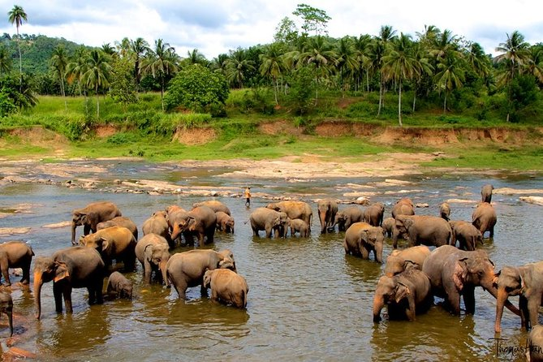
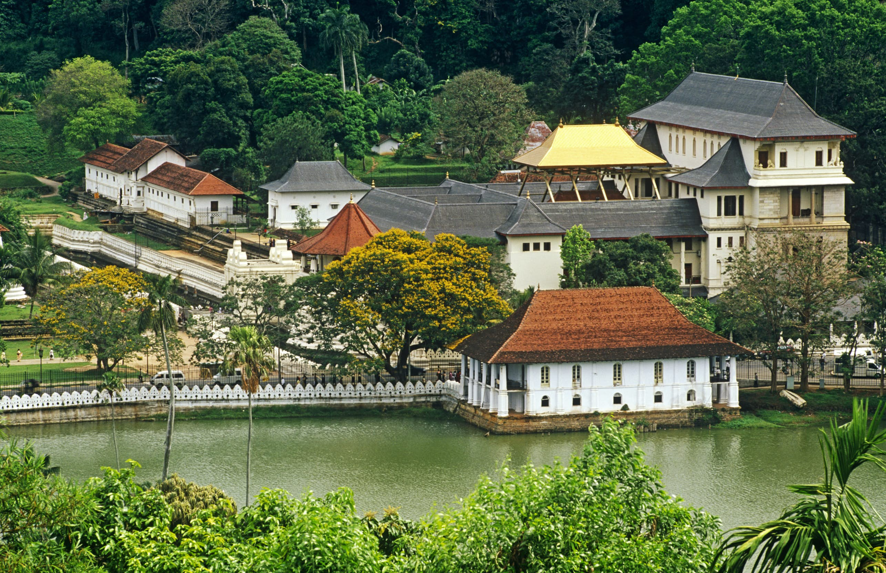

Sri Lanka has a population of around 22 million (2020) and is a multinational state, home to diverse cultures, languages, and ethnicities. The Sinhalese are the majority of the nation's population. The Tamils, who are a large minority group, have also played an influential role in the island's history. Other long established groups include the Moors, the Burghers, the Malays, the Chinese, and the indigenous Vedda.[14] Sri Lanka's documented history goes back 3,000 years, with evidence of prehistoric human settlements that dates back at least 125,000 years.[15] The earliest known Buddhist writings of Sri Lanka, known collectively as the Pāli canon, date to the fourth Buddhist council, which took place in 29 BCE.[16][17] Also called the Teardrop of India, or the Granary of the East, Sri Lanka's geographic location and deep harbours have made it of great strategic importance, from the earliest days of the ancient Silk Road trade route to today's so-called maritime Silk Road.[18][19][20] Because its location made it a major trading hub, it was already known to both Far Easterners and Europeans as long ago as the Anuradhapura period
We pick you up from Railway station (or) from airport by our representative of our tour agent who takes you smooth road journey to the KANDY CITY will visit the following places
1)Beautiful lakes , rivers and other natural endowments
2)Pinnawela Elephant Orphanage
3)Temple of the Tooth Relic
After visiting these places you are taken to the hotel.you can checkin and relax
after breakfast at the hotel and then you can checkout as on the second day of the srilanka tour...
you will be transferred to BENTOTA CITY:
The beautiful resort town of Bentota is famous amongst tourists for picturesque sandy beaches which is why it is also popular as the City of Golden Beaches.
1)Boat ride on the water of Madhu River
2)BENTOTA BEACH
3)Kosgoda Turtle Hatchery
you will visit the COLOBO CITY
1)Galle Face Green- an urban park located along the coast of vast Indian Ocean.
2) Viharamahadevi Park
3)National Museum
4)Twin World Trade Center towers
At evening you aredropped at the shopping mall at Odel,Hoouse of fashions,Beverly street where you can find the majority of the shopping hotspots in colombo
This SRILANKA tour package ends today with tons of fond memories Wake up to a freshly-prepared breakfast at the hotel and then get ready to check out as it’s time to say ‘Goodbye’ to Sri Lanka. You will be transferred to Bandaranaike International Airport in Colombo for your onward journey back home.
→ Air Conditioned Room
→ Color TV With Satellite Transmission
→ Multi Cuisine Restauran
→ Running Hot & Cold Water
→ 24Hours Room Service
→ Best Sea view
BBQ Facility
→ Wi-fi Service
→ Food delivery to your door
→ Air Conditioned Room
→ Color TV With Satellite Transmission
→ 24Hours Room Service
→ Running Hot & Cold Water